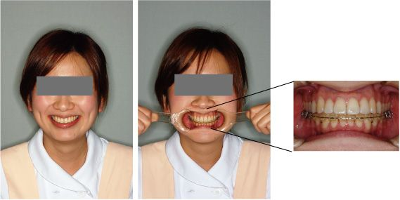
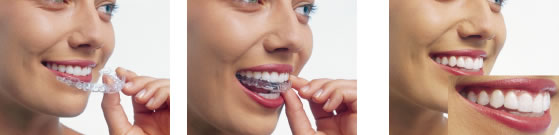

指定自立支援医療機関（育成医療・更生医療） 顎口腔機能診断医療機関

リンガルブラケット：
上下の歯の裏側にブラケットという装置が入ります

上の歯にリンガルブラケット、下の歯に通常の審美ブラケットをつけています。笑っても下の歯の装置はほとんど見えませんね
上の歯には、この様にリンガルブラケットが歯の裏側に装置が入っています
当院では、見えない：目立たない矯正装置として、ブラケットを歯の裏側につけるリンガルブラケットを使用して治療しています。これは、「矯正をしたいけど、目立つのはいやだなあ」と矯正治療を始める勇気のなかった方におすすめの矯正歯科治療法です。上下とも歯の裏側につけることも可能ですが、上の歯はリンガル（裏側）で、見えない矯正治療法として、下の歯は発音がしやすく、操作性に優れている従来の審美ブラケットを歯の表側につけることもあります。上の写真が、その例です。笑っても、下のブラケットはほとんど見えませんね。
コンピューターでカスタムメイドされた「インビザライン」です。上下別々にそれぞれ10枚から30枚くらいのマウスピースを決められた順番に装着していきます。

「インビザライン」は約2週間ごとに上下別々のマウスピースを装着していきます。
当院では「インビザライン：invisalign」というマウスピース矯正も行っています。テレビでも放映され、今話題になっていますね。 「インビザライン」は、透明で取り外しができるマウスピースを治療計画に基づいて、コンピューターでカスタムオーダーで制作します。それを、上下の歯列に順次装着することで、歯並びと噛み合わせを作っていく矯正治療です。マウスピースは約2週間ごとに新しいものに交換します。これによって、すこしずつ綺麗な歯並びへと整えていきます。「インビザライン」 はすでに世界で70万人を超える人々に使われており、実績があります。
「インビザライン」の特徴は次の通りです。
- 1） 透明感があり、装着していても目立ちません。
- 2） 食事や歯磨き時に取り外し可能なため、治療中、お口の中のおよび歯周組織の健康が、よりよく維持されます。
- 3） 矯正装置の装着による不快感が軽減されます。
- 4） 金属を使っていないので、金属アレルギーを引き起こす心配がありません。
- 5） 患者さんにも3Dアニメーション動画をお見せすることができるので、計画された歯の移動して行く様を事前に見ることができます。
ただし、どの患者さんにも適応できるとは限りません。比較的歯の移動が小さく、上あごと下あごの骨格のバランスの崩れが小さな患者さんに限られます。また、ブラケットなどの通常の矯正装置と組みわせて治療することがあります。この装置が使用できるか、料金など詳しいことはお気軽にご相談ください（相談は無料です）。